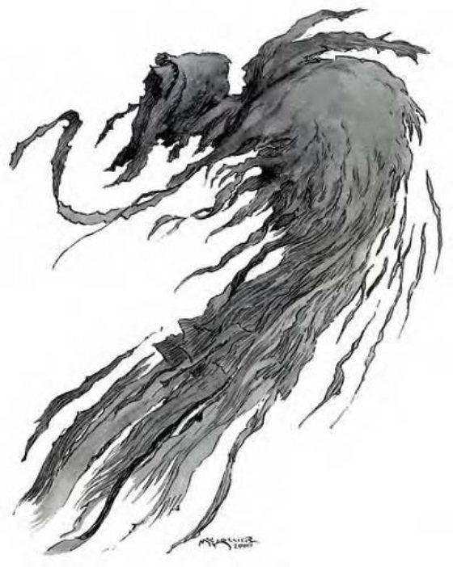

缚灵是躲在黑暗中不具形体的邪恶生物，也没有五官或附肢，只在眼睛的位置上有两点发亮的红光。
缚灵是诞生自邪恶和黑暗的虚体生物，痛恨所有活物，也厌恶光线。
某些情况下，缚灵黑暗的轮廓会呈现出盔甲或武器的形状，但这只是他们生前残留的形象，不会影响生物的防御等级或战斗能力。
缚灵身高和人类相当，因为两者皆为虚体，所以没有重量。
缚灵通晓通用语和炼狱语。
| 资料栏位 | 缚灵 (Wraith) 中型不死生物 (虚体) |
| 生命骰 | 5d12 (32HP) |
| 先攻 | +7 |
| 速度 | 飞行60英尺 (良好) (12格) |
| 防御等级 | 15 (+3敏捷、+2偏斜)、接触15、措手不及12 |
| 基本攻击/擒抱 | +2 / ― |
| 攻击 | 虚体接触+5近战 (1d4附加1d6吸取体质) |
| 全力攻击 | 虚体接触+5近战 (1d4附加1d6吸取体质) |
| 占据/触及 | 5英尺 / 5英尺 |
| 特殊攻击 | 吸取体质、产生衍体 |
| 特殊能力 | 黑暗视觉60英尺、白昼无力、虚体特性、+2驱散抗力、不死特性、非自然灵光 |
| 豁免 | 强韧+1、反射+4、意志+6 |
| 属性 | 力量―、敏捷16、体质―、智力14、感知14、魅力15 |
| 技能 | 交涉+6、躲藏+11、威吓+10、聆听+12、搜索+10、察言观色+8、侦察+12、生存+2 (追踪+4) |
| 专长 | 警觉 B、盲战、战斗反射、精通先攻 B |
| 环境 | 任何 |
| 组织 | 单独、成队 (2-5) 或一批 (6-11) |
| 宝藏 | 无 |
| 阵营 | 总是守序邪恶 |
| 进化 | 6-10HD (中型) |
| 等级修正值 | ― |
非自然灵光 (超自然)：无论野生或驯养的动物，只要在30英尺内就可以察觉到缚灵身上发出的不自然灵光。一旦察觉，动物不会主动接近缚灵，如果被迫进入30英尺范围内，则会陷入慌乱，直到脱离为止。
白昼无力 (特异)：接触到自然阳光时（“昼明术”则不会），缚灵会陷入无力，并且尽快逃离。
吸取体质 (超自然)：被缚灵的虚体接触击中的活物必须通过强韧检定 (DC=14)，否则会被吸取1d6点体质，豁免检定DC的调整值与体质调整值相同。缚灵在吸取同时可获得5点暂时生命值。
产生衍体 (超自然)：被缚灵杀害的人形生物在1d4天后灵魂会脱离尸体而转化为缚灵，尸体不会受到损伤但不能行动。成为衍体之后会受到创造它的缚灵控制，至死方休。他们并不具有任何生前的能力。